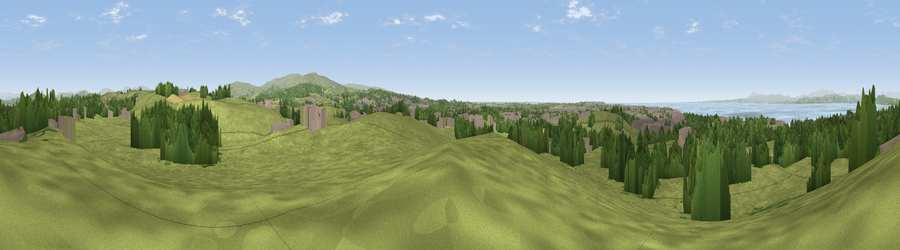

Viewpoint near Slyne
#9730 in England · top 37% of its area beats it · near SlyneThe view, rendered

A 360° render of this exact spot computed from the terrain model, tree cover and land cover — summer colours, afternoon light, calibrated against photographs of famous viewpoints. Real trees, hedges and buildings will differ in detail.
The panorama
Grey silhouette: terrain skyline in each direction (720 bearings, Earth curvature and refraction included). Dashed green: skyline with trees (+15 m) and buildings (+8 m) as obstacles. Blue strip: how far the ground is visible on each bearing.
Where the view opens
Wedge length = distance to the farthest visible ground on that bearing (vegetation-aware). Rings at 10, 25 and 50 km.
What fills the view
64% grassland · 18% woodland · 9% built-up · 6% water · 3% cropland
Angular shares of the visible panorama (visual magnitude), not map area. Landscape diversity 0.48 (0–1 Shannon).
Key numbers
More beautiful places nearby
The staircase of upgrades: each row has a higher view potential than everything closer. Driving times are estimates from straight-line distance, calibrated against real road routing — check an actual route before setting out.
| Place | Direction | Drive | Score |
|---|---|---|---|
| Inglebrick | NE · 2 km | ~6 min | 65.3 |
| Viewpoint near Lancaster | SSE · 4 km | ~9 min | 66.7 |
| Viewpoint near Nether Kellet | NE · 6 km | ~12 min | 69.7 |
| Viewpoint near Bailrigg | SSE · 6 km | ~13 min | 73.5 |
| Viewpoint near Bailrigg | SSE · 6 km | ~13 min | 74.4 |
| Viewpoint near Over Kellet | NE · 6 km | ~14 min | 77.4 |
| Viewpoint near Quernmore | ESE · 8 km | ~16 min | 77.7 |
| Warton Crag | NNE · 8 km | ~16 min | 83.2 |
54.07718, -2.81038 · source: screening · position refined by local search. Computed location — check access rights before visiting.